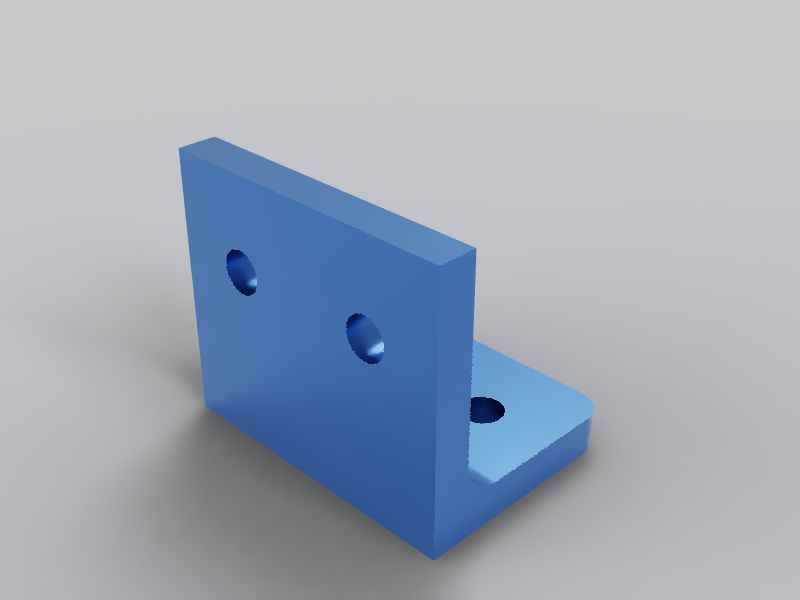

bracket
An L-bracket: a base and an upright, an inside fillet, mounting holes in both legs and rounded front corners. Run: cad run examples/bracket.ts

Source
Run it with cad run examples/bracket.ts.
// An L-bracket: a base and an upright, an inside fillet, mounting holes in both legs and
// rounded front corners. Run: cad run examples/bracket.ts
import { box, cylinder, model, param, sel } from "@cad/sdk";
export const bracket = model("bracket", () => {
const width = param("width", 40, { min: 20, max: 100, unit: "mm" });
const depth = param("depth", 30, { min: 15, max: 80, unit: "mm" });
const height = param("height", 35, { min: 15, max: 100, unit: "mm" });
const t = param("thickness", 5, { min: 2, max: 12, step: 0.5, unit: "mm" });
const hole = param("hole", 5.5, { min: 2, max: 10, step: 0.1, unit: "mm", description: "M5 clearance" });
// Base along +Y from the back face, upright rising along +Z at the back (y = 0..t).
const base = box(width, depth, t, { align: ["center", "min", "min"] });
const upright = box(width, t, height, { align: ["center", "min", "min"] });
const body = base
.fuse(upright)
.fillet(sel.near([0, t, t]), t) // the inside bend: the edge along X at y = t, z = t
.fillet("|Z and >Y", 4); // the base's two front vertical corners
const span = width / 2;
const baseHole = cylinder(hole / 2, t * 3).translate(-span / 2, t + (depth - t) * 0.55, 0);
const wallHole = cylinder(hole / 2, t * 3).rotateX(90).translate(-span / 2, t / 2, t + (height - t) * 0.6);
const bracket = body.cut(baseHole.linearCopies(2, [span, 0, 0]), wallHole.linearCopies(2, [span, 0, 0]));
return bracket.label("bracket", { color: "#4a6fa5", material: "aluminum" });
});
if (import.meta.main) await bracket();